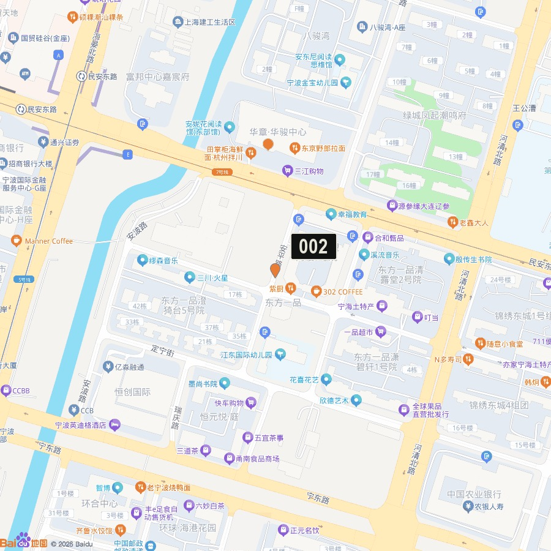
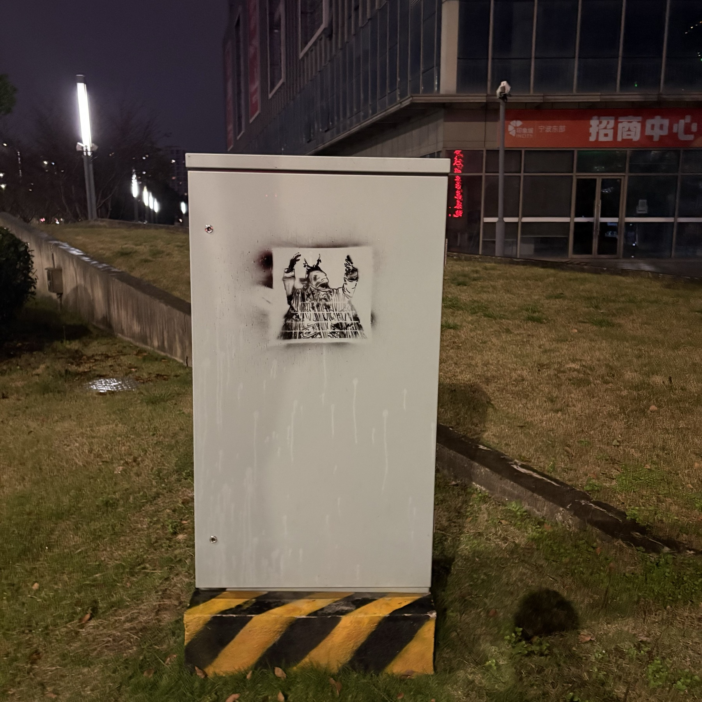

← mountain-shaman
FIELD RECORDS · 004
现场记录
Stencil / spray paint / site-specific
001
2026.10.31 · 06:31:32
APPLE MAPS ↗
百度地图标点 ↗
002
2026.11.07 · 21:01:00

APPLE MAPS ↗
百度地图标点 ↗
003
2026.11.07 · 21:35:03
APPLE MAPS ↗
百度地图标点 ↗

004
2026.11.07 · 21:56:18
APPLE MAPS ↗
百度地图标点 ↗